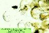

Prácticas de Biología marina: algas
verdes macroscópicas
Orden Caulerpales
1.- Características del orden
Talo de organización sifonal
(normalmente no
hay tabiques separando células). Se dan dos tipos de
construcción:
|
- Talo uniaxial: cada rama es un sólo
sifón, delimitado por una pared celular continua:
|
- Derbesiaceae
(Derbesiáceas) con talo filamentoso, formado por sifones
delgados.
|
 |
- Caulerpaceae
(Caulerpáceas), con talo seudoparenquimático, formado por
sifones cilíndricos gruesos y otros anchos de aspecto laminar
cuyas paredes están conectadas internamente por
trabéculas de xilano
|
 |
- Talo multiaxial: cada rama es un entretejido de
filamentos sifonales delgados; estructura plectenquimática
análoga
a la de los cuerpos fructíferos de los hongos superiores.
|
- Codiaceae
(Codiáceas), con talo de aspecto
esponjoso que presenta vesículas laterales formando una especie
de corteza que delimita las ramas: los utrículos (ver con el
objetivo x10 al microscopio). El ciclo es monogenético
diplofásico y es posible ver gametocistes
que nacen de los
utrículos en los ejemplares fértites
|
 |
- Udoteaceae
(Udoteáceas), con talo de aspecto
laminar, de crecimiento marginal, o filamentoso con estipe
plectenquimático
|
 |
Pared celular conteniendo diversos
polisacáridos (con variaciones dentro del ciclo
biológico): xilano, celulosa, manano y glucano
|
Reproducción sexual por anisogamia;
reproducción asexual poco frecuente, con zoosporas estefanocontas
|
|
Ciclo biológico generalmente
monogenético diplofásico, salvo en las formas más
sencillas (Derbesiáceas), cuyo ciclo es digenético
heteromórfico
|
2.- Cuadro resumen
| Géneros |
Especies |
Talos |
Imágenes |
Bryopsis
(Fam. Derbesiáceas)
|
B. corymbosa |
Filamentoso uniaxial, con ramificación lateral;
ramas no dísticas
|
 |
|
B. duplex |
ramas dísticas
|
|
Caulerpa
(Fam. Caulerpáceas) |
C. prolifera |
Seudoparenquimático uniaxial, diferenciado en
rizoides, cauloides y filoides enteros |
 |
|
C. taxifolia |
con filoides pinnados
|
|
Codium
(Fam. Codiáceas) |
C. adhaerens |
Plectenquimático multiaxial, esponjoso,
en forma de costra
|
|
|
C. bursa |
en forma de bola
|
|
|
C. decorticatum |
cilíndrico dicotómico
|
 |
|
C. effusum |
en forma de costra
|
|
|
C. tomentosum |
cilíndrico dicotómico
|
 |
|
C. vermilara |
cilíndrico dicotómico
|
|
Derbesia
(Fam. Derbesiáceas) |
D. tenuissima |
Filamentoso uniaxial con ramificación
dicotómica; filamentos < 0,1 mm de diámetro |
|
Pedobesia
(Fam. Derbesiáceas) |
P. lamourouxii |
Ídem; filamentos > 0,3 mm de diámetro |
|
Penicillus
(Fam. Udoteáceas) |
P. capitatus |
Plectenquimático multiaxial, con filoide
filamentoso |
|
Udotea
(Fam. Udoteáceas) |
U. petiolata |
Plectenquimático multiaxial, con filoide laminar |
|
3.- Más datos
sobre
Caulerpales del litoral atlántico andaluz
(tomados de C. Romero Zarco, Introducción
al estudio del macrofitobentos marino de Andalucía occidental,
Universidad de Sevilla, guia de prácticas inédita)
Familia Caulerpáceas
Caulerpa Lamour.,
1809. Género de afinidad tropical, con tres especies citadas en
la Península y Baleares (una en el litoral atlántico,
otra en el mediterráneo y otra en ambos).
C. prolifera
(Forsskal) Lamour., 1809. Frecuente y abundante, formando césped
en fondos
limosos y arenosos infralitorales (Seoane-Camba, 1965). Fotófila
infralitoral termófila de sustrato blando. Atlántica
tropical.
C. taxifolia (Vahl) C. Agardh, alga
invasora y tóxica introducida recientemente en el Sur de Francia
y en proceso de expansión por el Mediterráneo
(Ballesteros, 1992: 37). Aún no se ha detectado en
Andalucía, pero es importante conocerla y por eso la
incluímos en el catálogo. Pantropical
Familia Codiáceas
Codium Stackh., 1797.
Género bien caracterizado por su textura esponjosa, con unas 80
especies conocidas, 8 de ellas en la Península y Baleares (6 en
ambos litorales y 2 exclusivas del litoral mediterráneo)
| 1. |
Talo erecto,
ramificado dicotómicamente |
2
|
| 1. |
Talo postrado,
en forma de bola, almohadilla o costra |
4
|
| 2. |
Talo de gran tamaño, generalmente de más de
15 cm de longitud, con las bifurcaciones aplanadas |
C. decorticatum |
| 2. |
Talo de hasta 15 cm de longitud, con las bifurcaciones no
aplanadas |
3
|
| 3. |
Talo con
ramificación dicotómica regular;
utrículos con pelos o cicatrices muy por debajo del
ápice, que es redondeado (obervar al microscopio) |
C. tomentosum |
| 3. |
Talo con
ramificación irregular; utrículos
con pelos o cicatrices muy cerca del ápice, que es aplanado |
C.
vermilara |
| 4. |
Talo en forma de bola hueca |
C. bursa |
| 4. |
Talo en forma de costra o almohadilla |
5
|
| 5. |
Talo en forma
de almohadilla hemisférica |
C. effusum |
| 5. |
Talo en forma
de costra con zonas más o menos
hinchadas |
C.
adhaerens |
C. adhaerens C. Agardh, 1822.
Frecuente recubriendo rocas batidas desde Cádiz hasta Tarifa
(Seoane-Camba, 1965). Holo atlántico-pacífica.
C. bursa (L.) C. Agardh, 1822.
Frecuente y localmente abundante en fisuras y charcas de marea
(Seoane-Camba, 1965). Fotófila infralitoral de zonas calmas.
Atlántica boreo-tropical.
C. decorticatum (Woodw.) M. Howe,
1911 [= C. elongatum (Turn.) C. Agardh]. Muy frecuente y
abundante en la zona infralitoral desde Cádiz hasta Tarifa,
apareciendo arrojada en la playa en verano (Seoane-Camba, 1965).
También citada en el
litoral de Huelva (Navarro & Gallardo, 1995). Hemisciófila
de
pequeños puertos. Holo indo-atlántica.
C. effusum (Raf.) Delle Chiaje,
1829
(= C. difforme Kütz.). Muy parecida a C. adhaerens
pero
menos frecuente en Cádiz, también recubriendo rocas
batidas
(Seoane-Camba, 1965). Esciófila infralitoral de zonas calmas.
Holo
indo-atlántica.
C. tomentosum Stackh. 1797. Muy
frecuente y abundante en la zona infralitoral, apareciendo arrojada en
la playa
principalmente durante el verano (Seoane-Camba, 1965). Holo
atlántico-pacífica.
C. vermilara (Olive) Delle Chiaje,
1829. Citada en varios puntos del litoral de Huelva, desde Lepe a Punta
Umbría (Navarro & Gallardo, 1995). En Cádiz Conde
& al. (1996)
la han recolectado en Punta Candor (Rota), Playa de la Victoria
(Cádiz)
y Punta Carnero (Algeciras). Atlántica boreal.
Familia
Derbesiáceas
| 1. |
Ramificación
lateral (ejes principales y otros
secundarios más cortos) |
Bryopsis |
| 1. |
Ramificación
dicotómica o irregular, sin dos
tipos de ejes diferenciados |
2
|
| 2. |
Filamentos relativamente gruesos (> 3 mm) |
Pedobesia |
| 2. |
Filamentos relativamente finos (< 1 mm) |
Derbesia |
Bryopsis Lamour.,
1809. Género de taxonomía compleja que requiere
revisión, con unas 11 especies en la P.I. (8 en ambas orillas de
la Península y 3 en el litoral mediterráneo). *
| 1. |
Rámulas dísticas |
B. duplex |
| 1. |
Rámulas no dísticas |
2
|
| 2. |
Rámulas de longitud uniforme |
B. muscosa |
| 2. |
Rámulas superiores más cortas |
B. corymbosa |
B. corymbosa J. Agardh, 1842.
Observada en Septiembre en charcas de marea baja en el sector del
Estrecho (Seoane-Camba, 1965). Mediterránea.
B. duplex De Not, 1844 (= B.
balbisiana auct.). Localmente abundante en Cádiz durante
todo el año en fisuras del mesolitoral inferior (Seoane-Camba,
1965). Fotófila infralitoral de zonas batidas. Atlántica
boreo-tropical.
*B. feldmannii Gallardo &
Furnari
¿año? Ha sido citada en la isla de las Palomas (Tarifa,
Cádiz)
por Conde & al (1996). No tengo más datos sobre esta especie.
B. muscosa Lamour., 1809. Citada
en la provincia de Cádiz según Flores-Moya & al.
(1995). Morfología similar a B. corymbosa, pero con los
frondes estrechos, con ramas laterales de longitud uniforme (unos 3
mm). Fotófila infralitoral de zonas batidas.
Mediterránea.
Derbesia Solier,
1846.
Una sola especie atlántica y mediterránea en la
Península.
D. tenuissima (De Not) Crouan
frat.,
1867. Rara, observada en La Caleta (Cádiz) y cerca de Conil en
verano
y otoño (Seoane-Camba, 1965). Arrojada en Isla Cristina (Huelva,
Navarro & Gallardo, 1995). Eutrófica y tionitrófila.
Atlántica boreal. Esciófila infralitoral y circalitoral.
La fase gametofítica de esta especie
(según Kornmann, 1938) es conocida con el nombre de Halicystis
parvula
F. Schmitz y forma pequeñas vesículas verdes de 2-7
mm de diámetro sobre algas incrustantes.
Pedobesia MacRaild
& Womersley, 1974. Una sóla especie atlántica y
mediterránea en la Península.
P. lamourouxii (J. Agardh) J.
Feldm.
& al., 1975 [= Derbesia lamourouxii (J. Agardh) Solier].
Rara,
observada en otoño e invierno en Cádiz y Tarifa
(Seoane-Camba,
1965). Hemisciófila de pequeños puertos. Atlántica
tropical.
Familia
Udoteáceas
| 1. |
Filoide(s) laminar(es), en forma de abanico |
Udotea |
| 1. |
Filoide filamentoso, en forma de pincel |
Penicillus |
Penicillus Lam.,
1813.
Udoteáceas (Clorofitas). Una sola especie atlántica y
mediterránea.
P. capitatus Lam., 1813. Rara,
observada en Febrero en fisuras arenosas de La Caleta (Cádiz,
Seoane-Camba, 1965). Fotófila infralitoral termófila de
sustrato blando. Sin datos de distribución.
Udotea Lamour., 1812. Udoteáceas
(Clorofitas). Una sola especie atlántica y mediterránea
en la P.I.
U. petiolata
(Turra) Boerg., 1925. Algunos autores incluyen esta especie en el
género Flabellia Reicheb. con el nombre de F.
petiolata (Turra)
Nizamuddin. Frecuente y localmente abundante en Cádiz, en el
mesolitoral
inferior e infralitoral superior (Seoane-Camba, 1965).
Antisciófila.
Atlántica tropical.
Volver a Algas_verdes.htm
Página publicada el
3-04-2001, © C. Romero Zarco, Universidad de Sevilla - Actualizada
el 24-07-2003